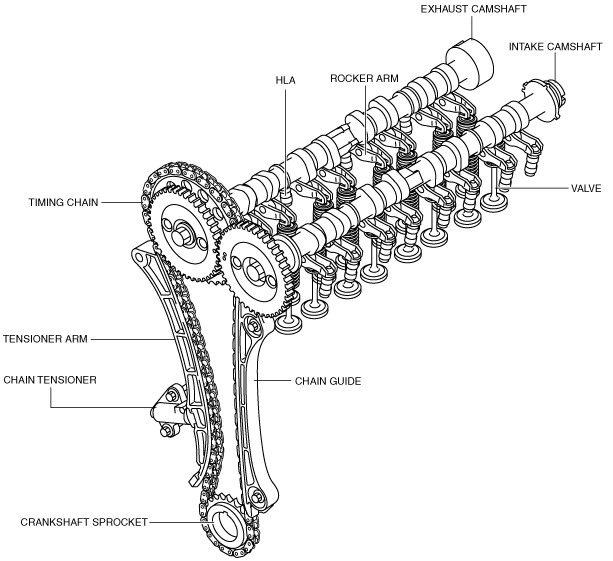

VALVE MECHANISM [SKYACTIV-D 1.5]
id0110q2001200
Outline
• A DOHC type valve system has been adopted and consists of four valves (two intake valves and two exhaust valves) per cylinder for a total of 16 valves operated by two camshafts.
Structural View

am2zzn00002711